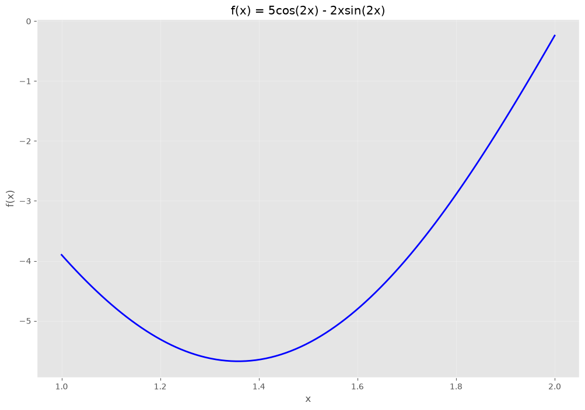
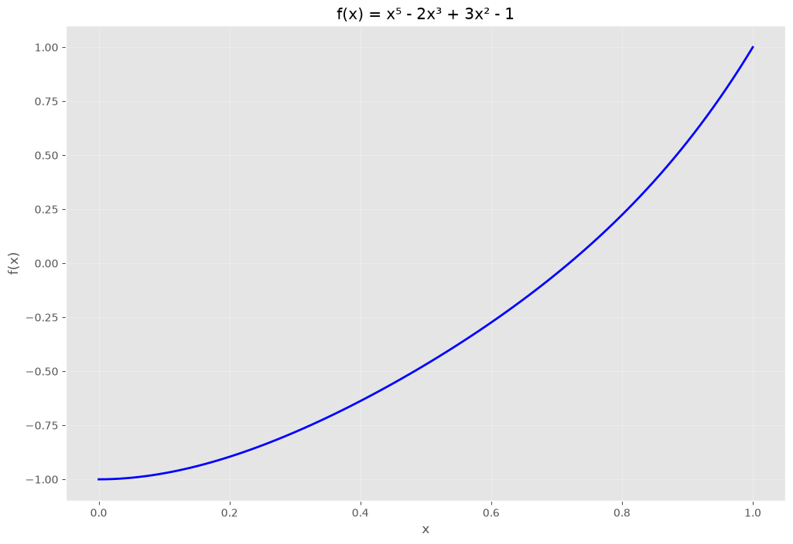
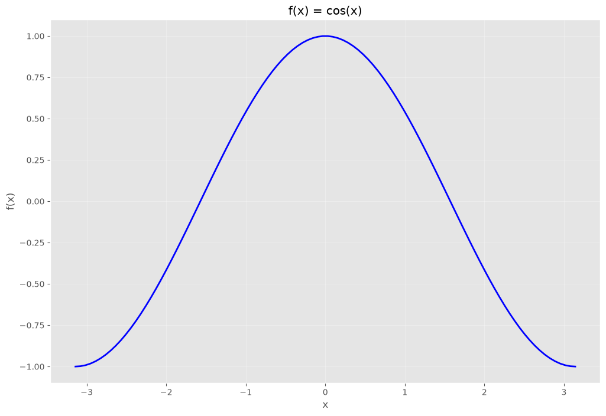

Preliminares matemáticos#
Límites y continuidad#
Es importante recuperar los conceptos de límite y continuidad de una función para el estudio del cálculo. Además, son parte de las bases para el análisis de técnicas numéricas.
Definición 1
Una función \(f\) definida sobre un conjunto \(X\) de números reales tiene el límite \(L\) en \(x_{0}\), como sigue
si, dado cualquier número real \(\varepsilon > 0\), existe un número real \(\delta > 0\) tal que
Definición 2
Sea \(f\) una función definida sobre un conjunto \(X\) de números reales y \(x_{0} \in X\). Entonces \(f\) es continua en \(x_{0}\) si
La función \(f\) es continua sobre el conjunto \(X\) si esta es continua en cada número en \(X\).
Definición 3
Sea \(\{x_{n}\}_{n=1}^{\infty}\) una secuencia infinita de números reales. Esta secuencia tiene el límite \(x\) (converge a \(x\)) si, para cualquier \(\varepsilon >0\) existe un entero positivo \(N\left(\varepsilon\right)\) tal que \(|x_{n} - x| < \varepsilon\), cuando sea \(n>N\left(\varepsilon\right)\). La notación
significa que la secuencia \(\{x_{n}\}_{n=1}^{\infty}\) converge a \(x\).
Teorema 1
Si \(f\) es una función definida sobre un conjunto \(X\) de números reales y \(x_{0}\in X\), entonces las siguientes afirmaciones son equivalentes:
\(f\) es continua en \(x_{0}\).
Si \(\{x_{n}\}_{n=1}^{\infty}\) es cualquier secuencia en \(X\) que converge a \(x_{0}\), entonces \(\lim_{n\to \infty}~f\left(x_{n}\right) = f\left(x_{0} \right)\).
Diferenciabilidad#
Definición 4
Sea \(f\) una función definida en un intervalo abierto que contiene \(x_{0}\). La función \(f\) es diferenciable en \(x_{0}\) si
existe. El término \(f'\left(x_{0}\right)\) es llamado la derivada de \(f\) en \(x_{0}\). Una función que tiene una derivada en cada número en un conjunto \(X\) is diferenciable en \(X\).
Teorema 2
Si una función \(f\) es diferenciable en \(x_{0}\), entonces \(f\) es continua en \(x_{0}\).
Teorema 3 (Teorema de Rolle)
Suponga que \(f \in C[a, b]\) y que \(f\) es diferenciable en \((a, b)\). Si \(f(a) = f(b)\), entonces existe un número \(c\) en \((a, b)\) tal que \(f'(c) = 0\).
Teorema 4 (Teorema del valor medio)
Si \(f\in C[a,b]\) y \(f\) es diferenciable en \((a,b)\), entonces existe un número \(c\) en \((a,b)\) tal que
Teorema 5 (Teorema del valor extremo)
Si \(f\in C[a,b]\), entonces existen \(c_{1},c_{2} \in[a,b]\) tales que \(f\left(c_{1} \right) \leq f(x) \leq f(c_{2})\) para todo \(x\in[a,b]\). Además, si \(f\) es diferenciable en \((a,b)\), entonces los números \(c_{1}\) y \(c_{2}\) se encuentran ya sea en los extremos de \([a, b]\) o donde \(f'\) es cero.
Ejemplo 1. Encuentre el mínimo absoluto y el máximo absoluto de la siguiente función
sobre los intervalos
\([1,2]\).
\([1/2,1]\).
import numpy as np
import matplotlib.pyplot as plt
# Suprimir advertencias menores de integración durante los bucles de optimización
import warnings
warnings.filterwarnings("ignore")
# Configurar el estilo de graficación para una mejor visualización
plt.style.use('ggplot')
x = np.linspace(1, 2, 100)
f = lambda x: 5*np.cos(2*x)-2*x*np.sin(2*x) #
# Graficar
plt.figure(figsize=(12, 8))
plt.plot(x, f(x), 'b-', linewidth=2)
plt.xlabel('x')
plt.ylabel('f(x)')
plt.title('f(x) = 5cos(2x) - 2xsin(2x)')
plt.grid(True, alpha=0.3)
plt.axis('tight')
plt.show()

Teorema 6 (Teorema de Rolle generalizado)
Suponga que \(f \in C[a,b]\) es \(n\) veces diferenciable en \((a,b)\), y además, \(f(x)=0\) en los \(n+1\) nuḿeros distintos \(a\leq x_{0} < x_{1} < \dots < x_{n} \leq b\), entonces existe un número \(c\) en \((x_{0}, x_{n})\) y por consiguiente en \((a,b)\) tal que \(f^{(n)}(c) = 0\).
Teorema 7 (Teorema del valor intermedio)
Si \(f\in C[a,b]\) y \(K\) es cualquier número entre \(f(a)\) y \(f(b)\), entonces existe un número \(c\) en \((a,b)\) tal que \(f(c)=K\).
Ejemplo 2. Muestre que \(x^{5} - 2x^{3} + 3x^{2} - 1 = 0\) tiene una solución en el intervalo \([0,1]\).
x = np.linspace(0, 1, 100)
f = lambda x: x**5 - 2*x**3 + 3*x**2 - 1 #
# Graficar
plt.figure(figsize=(12, 8))
plt.plot(x, f(x), 'b-', linewidth=2)
plt.xlabel('x')
plt.ylabel('f(x)')
plt.title('f(x) = x⁵ - 2x³ + 3x² - 1')
plt.grid(True, alpha=0.3)
plt.axis('tight')
plt.show()

Integración#
Definición 5
La integral de Riemann de una función \(f\) sobre el intervalo \([a, b]\) es el siguiente límite, siempre que exista
donde los números \(x_{0},x_{1},\dots,x_{n}\) satisfacen \(a=x_{0} \leq x_{1} \leq \cdots \leq x_{n} = b\) donde \(\Delta x_{i} = x_{i} - x_{i-1}\), para cada \(i=1,2,\dots,n\) y \(z_{i}\) es arbitrariamente escogido en el intervalo \([x_{i-1},x_{i}]\).
Teorema 8 (Teorema del valor medio ponderado para integrales)
Suponga que \(f \in C[a, b]\), que la integral de Riemann de \(g\) existe en \([a, b]\) y que \(g(x)\) no cambia de signo en \([a, b]\). Entonces existe un número \(c\) en \((a, b)\) tal que
Polinomios de Taylor y series#
Teorema 9 (Teorema de Taylor)
Suponga que \(f \in C^{n} [a, b]\), que \(f^{(n+1)}\) existe en \([a, b]\) y \(x_{0} \in [a, b]\). Para cada \(x \in [a, b]\), existe un número \(\xi(x)\) entre \(x_{0}\) y \(x\) tal que
donde
y
Ejemplo 3. Sea \(f(x) = \cos(x)\) y \(x_{0}=0\), determine:
el segundo polinomio de Taylor de \(f\) en torno a \(x_{0}\).
el tercer polinomio de Taylor de \(f\) en torno a \(x_{0}\).
x = np.linspace(-np.pi, np.pi, 100)
f = lambda x: np.cos(x) #
# Graficar
plt.figure(figsize=(12, 8))
plt.plot(x, f(x), 'b-', linewidth=2)
plt.xlabel('x')
plt.ylabel('f(x)')
plt.title('f(x) = cos(x)')
plt.grid(True, alpha=0.3)
plt.axis('tight')
plt.show()
